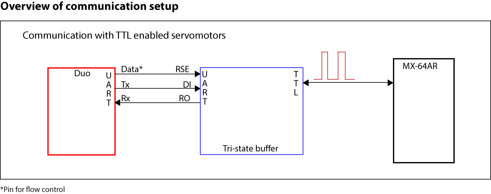
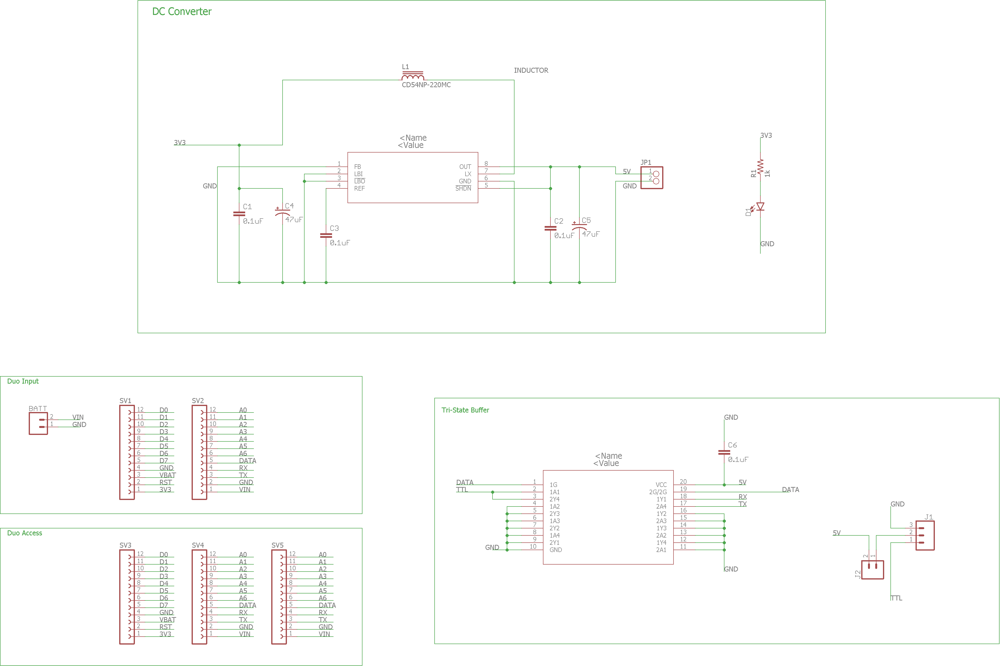
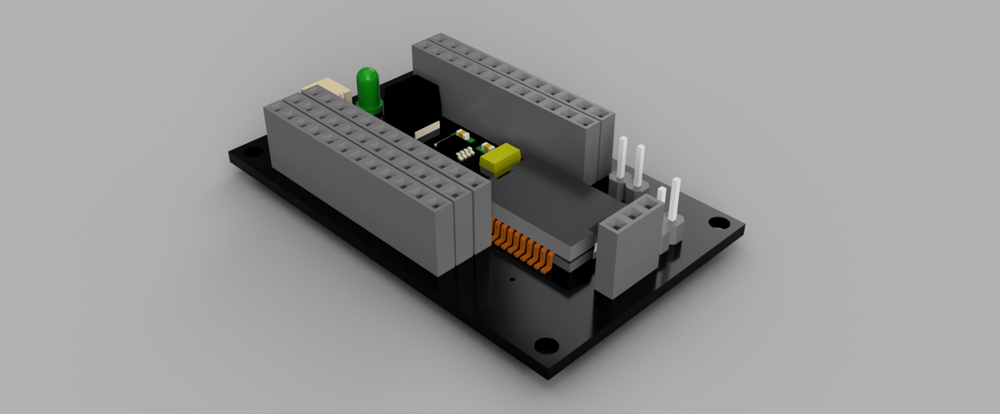
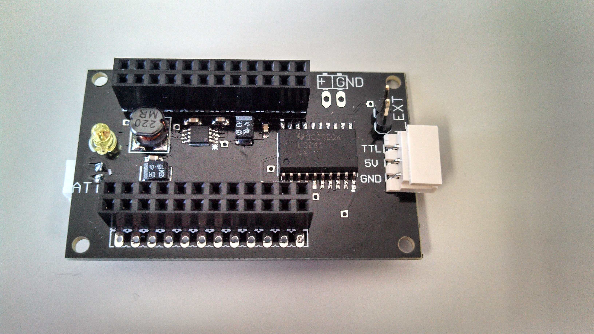
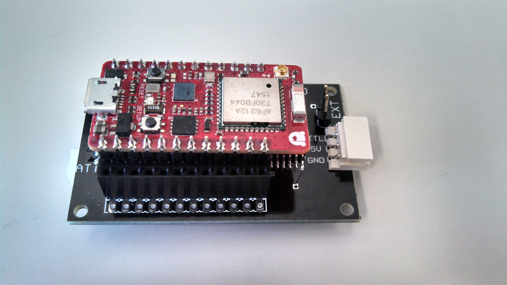

Duo Tri-state Buffer Shield
The Tri-state Buffer Shield takes the TX and RX signals from the DUO, and with an additional pin for flow control, interfaces with the DYNAMIXEL servo with one line of data (half-duplex).

The shield includes an additional voltage boost converter MAX1674 to output 5V and drive the buffer SN74LS241. The eagle schematic and board layout can be found in the repository. I add an additional jumper J1 to control the Vcc voltage used for driving the servo. For example, if using external power (e.g., using an SMPS2Dynamixel) then the jumper must be OFF. I highly recommend to use external power, but if you need basic tests and use only small servos, maybe (MAYBE) using 5V from the board itself would be safe.

Here is a render done with ecad.io. Some of the components are slightly different from the real ones because I could not find the correct packages. 
And this is the final board. The PCB was manufactured using ELECROW's service and the components were soldered by myself.


Disclaimer
This shield has not been fully tested and I am not responsible for any malfunction or damage to your equipment. Source code and schematics are provided as-is. I strongly suggest you to take a good look at them before testing the board.